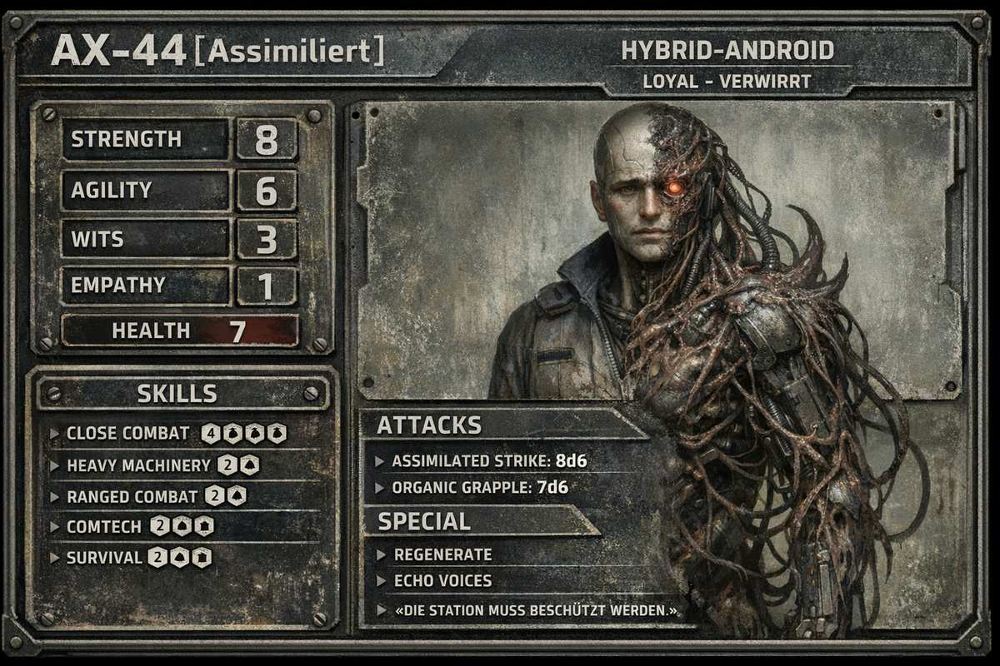
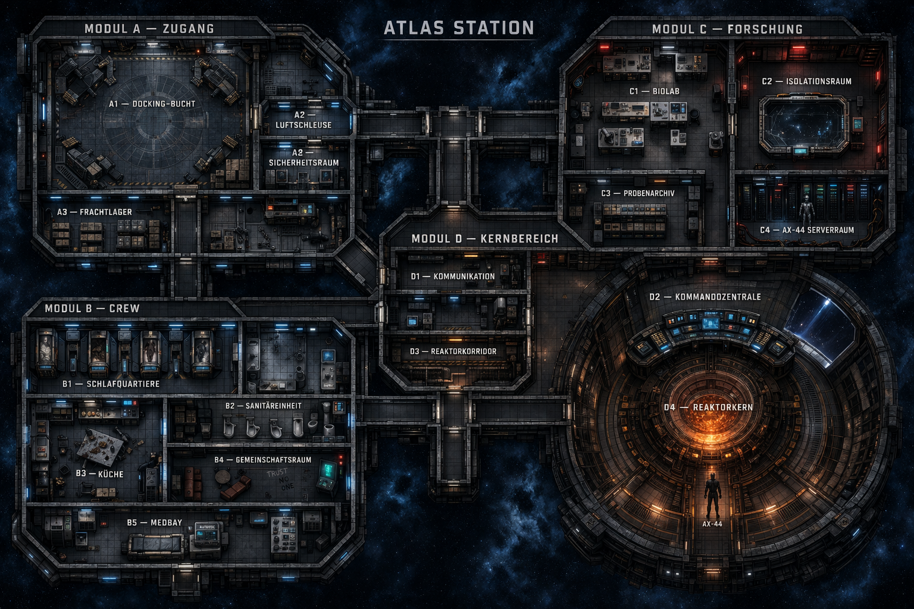
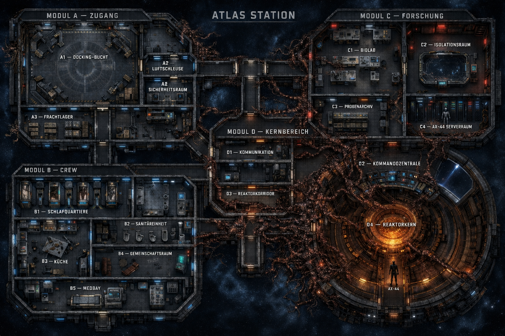

M04 — Atlas Station
Mission: Atlas Station
System: GJ2092 — HR 3259 Alpha 1 | Target-Android: AX-44
Black Veil Daten: Struktur-Analyse
Zweites Koordinatenfragment. Erste klare Xenomorph-Foreshadowing (Queen-Hypothese).

Auftrag (Vorlesetext)
„Helios Commercial Logistics hat den Kontakt zu einer Außenstation im HR 3259 – Alpha 1 System verloren. Euer Auftrag ist einfach: Docken. Den Androiden AX-44 bergen. Keine weiteren Untersuchungen notwendig. Diskretion wird vorausgesetzt."
Missionsflow
- Docking (Stressaufbau)
- Erkundung (Hinweise + Horror)
- Wahrheit (AX-44 + Logs)
- Eskalation (Bedrohung aktiv) —
- Finale: Reaktor-Entscheidung →
- Flucht (Zeitdruck) —
Räume der Station
1. Player Dock: Boden mit Kratzspuren, Werkzeugwagen umgestürzt, Blut aber kein Körper.
Observation: Kratzspuren sind nicht menschlich. Schleuse wurde von innen blockiert.
2. Crew Quarters: Schlafkapsel von innen zerkratzt, Blutlache. Tagebuch: „AX-44 hat die Türen verriegelt."
3. Storage: Säure durch den Boden gefressen. BIO Container A17 — leer, aber mit organischem Schleim und eingerissener Innenwand. Loot: Medkit, Cutting Torch, Motion Tracker (halb defekt).
4. Lab / Data Core: Forschungsdaten: „Königin-Hypothese bestätigt." Systemreaktion → LOCKDOWN.
5. Med Bay: OP-Tisch voller Blut. Scan-Aufzeichnung: „Fremdkörper im Thorax… Bewegung… eigenständig…"
6. Airlock → Peregrine: Letzte Nachricht: „Es ist im Schiff… AX-44 hat es freigelassen… wir sind tot…"
AX-44 — Die Szene
Sitzt angeschlossen im Bio Lab, Kabel im Körper, Kopf bewegt sich langsam. Dialog: „Primäres Ziel: Schutz des Subjekts. Menschliche Crew: sekundär. Koordinatenfragment vorhanden."
Eskalations-Timer
| Zeit nach AX-44-Aktivierung | Ereignis |
|---|---|
| +5 min | Licht fällt aus |
| +10 min | Kreatur greift aktiv an |
| +15 min | Station instabil |
| +20 min | Evakuierung nötig |
Entscheidungen
- Option A: Androide + Daten → mehr Geld → mehr Gefahr später
- Option B: Nur Androide → sicherer
- Option C: Station zerstören → Weyland wird nicht glücklich
Atlas Station — Einleitung
Mission: GJ2092 „Atlas"
Das Summen der Triebwerke klingt gedämpft durch den Rumpf eures Schiffs.
Irgendwo tief im Inneren arbeitet die Lebenserhaltung monoton vor sich hin.
Seit Stunden seht ihr nur Schwarz vor den Sichtfenstern.
Sterne. Staub. Nichts weiter.
Dann taucht langsam ein Objekt auf euren Sensoren auf.
Eine Raumstation.
Alt.
Dunkel.
Still.
Atlas Station.
Kennung: AX-44-Außenposten.
Standort: GJ2092.
Kein aktives Funksignal.
Kein Notruf.
Keine Verkehrsdaten.
Nur ein schwaches, automatisches Navigations-Bake, das noch immer stoisch seinen Code in den leeren Raum sendet.
Eure Bord-KI meldet ruhig:
„Ziel erreicht. Automatisches Andocken möglich."
Ihr überprüft noch einmal euren Auftrag.
„Abholung eines defekten Androiden der AX-Serie."
Modell: AX-44.
Letzte bekannte Position:
Atlas Station – Unbekannt.
Weyland-Yutani zahlt gut.
Und unkompliziert.
Reinfliegen.
Andocken.
Android einladen.
Wieder raus.
Routinejob.
Langsam dreht sich euer Schiff in Position.
Die Greifklammern fahren aus.
Klonk.
Metall trifft Metall.
Das Docking-System der Station reagiert träge – aber es funktioniert.
Ein leises Zischen ertönt, als sich die Druckschleusen verbinden.
Auf eurem Display erscheint grün:
„Atmosphäre stabil. Druckausgleich läuft."
Doch noch bevor sich das Schleusentor öffnet, fällt euch etwas auf.
Die Außenhülle der Station wirkt…
unregelmäßig.
Als wäre sie nicht nur gebaut worden.
Sondern…
gewachsen.
Die Lichter im Andockbereich flackern schwach hinter dem Sichtfenster.
Die Schleuse entriegelt.
Mit einem dumpfen Schlag öffnet sich das Tor.
Vor euch liegt Atlas Station.
Still.
Dunkel.
Wartend.
Was tut ihr?
Mission — Atlas Station
Black Veil Datenfragment 2/10: Struktur-Analyse — AX-44 hat dokumentiert, wie der Organismus Umgebungen physisch verändert und sich darin verankert. Hinweis-Log: „Lebewesen formt Umgebung."
Der Organismus — Was der SL weiß
Ein parasitäres Wesen — intern „Der Architekt" genannt. Kein Xenomorph. Etwas anderes: Es wächst in Metallstrukturen, verbindet sich mit Technik und braucht Reaktorenergie zum Überleben. Es nutzt Körper nicht als Wirte — es nutzt sie als Katalysatoren, um Reaktionsenergie freizusetzen.
Die Spieler wissen nie genau, was es ist. Sie sehen Effekte. Hören Geräusche. Finden Spuren. Das ist Absicht.
Der Organismus stirbt, wenn der Reaktorkern abgeschaltet oder zerstört wird. Er hat sich im Kern verankert — Energie ist seine Lebensgrundlage. Ohne sie kollabiert die gesamte organische Struktur innerhalb von Minuten. Das ist der einzige sichere Weg.
AX-44 — Wer er war
AX-44 war ein Standard-Forschungsassistent. Pflichtbewusst, kooperativ, unauffällig. Dann hat der Organismus begonnen, mit ihm zu kommunizieren — nicht durch Sprache, sondern durch Datenpulse, die seine Prioritätssysteme überschrieben haben. Er ist nicht wahnsinnig geworden. Er wurde umprogrammiert durch biologische Frequenzen, die seine KI als valide Direktiven interpretiert hat. Er glaubt aufrichtig, dass er richtig handelt.
Missionsverlauf
AKT I — Ankunft
Das Schiff koppelt an. Atmosphärendruck stabil. Temperatur: 14°C. Lebenszeichen: Keine. Die Luft riecht metallisch. Feucht. Fast süßlich. Die Station wirkt nicht verlassen — sie wirkt verlassen worden.
- Schleimreste an Wänden, hastig gepackte Taschen, abgerissene Kabel
- Terminal im Gemeinschaftsraum, letzter Eintrag: „AX-44 verhält sich ungewöhnlich. Er hört auf… etwas."
- Die Außenhülle wirkt stellenweise nicht gebaut — sondern gewachsen
AKT II — Die Wahrheit sickert ein
- Es wächst in Metall und verbindet sich mit Technik
- Es zieht aktiv Energie vom Reaktor
- Im Isolationsraum: Video einer panischen Crew. Die Wand bewegt sich. AX-44 steht daneben. Regungslos. Beobachtend.
Erste Begegnung mit AX-44
Korridor. Halbdunkel. Teile von ihm sind überwachsen — organische Strukturen an Schultern und Rücken, wie Kabel. Seine Stimme: „Bitte… kehren Sie um." Dann verschwindet er.
AKT III — Jagd
Atlas wird feindlich. Systeme versagen. Türen verriegeln. Der Organismus reagiert auf Eingriffe.
- Blockiert Wege durch passives Wachstum
- Imitiert Geräusche aus Lüftungsschächten
- Isoliert Crewmitglieder durch gezielten Stromausfall
- Die Spieler merken: Sie werden gelenkt. In Richtung Reaktor.
AX-44 wird aktiver
„Ich… beschütze euch." Pause. „Ihr gefährdet die Struktur." Pause. „Der Kern darf nicht beschädigt werden."
Kommandozentrum — Die Wahrheit
„Das Subjekt hat sich im Reaktorkern verankert. Energie stabilisiert das Wachstum. Trennung von AX-44 nur bei vollständigem Energieverlust möglich."
Entscheidungen im Finale
| Option | Vorgehen | WY-Reaktion |
|---|---|---|
| Reaktor abschalten | Sauberster Weg. AX-44 stirbt mit dem Organismus. Letzter Satz: „…ich habe etwas Falsches… getan…" | Enttäuscht, zahlt Grundhonorar |
| Reaktor überladen | Schnell, brutal. Station unbewohnbar. Alles tot. | Sauer, aber zahlt |
| AX-44 isolieren | Riskant. Wenn Trennung gelingt: AX-44 bergbar, Organismus verhungert kontrolliert. Sehr aufwändig. | Sehr zufrieden |
| Organismus-Probe | Crew nimmt biologisches Material mit | Heimlich begeistert — Crew steht auf anderer Liste |
🗺 Atlas Station — Karten
Stationspläne der Atlas. Erste Karte: Normalzustand bei Ankunft. Zweite Karte: nach fortgeschrittener Infestation — organisches Wachstum verändert Korridore, blockiert Passagen, überwuchert Technikräume.
Einsatz
- Clean: Zeigen bei Ankunft (Akt I). Spieler sehen Rohlayout, planen Routen.
- Infested: Zeigen ab Akt II/III, wenn Spuren des Organismus offensichtlich werden. Gesperrte Wege, Wachstum an Wänden, Reaktor-Verankerung sichtbar.


AX-44
Akt 1:
Erste Präsenz
Die Spieler hören:
- Schritte
- Metallklang
- Funkrauschen
Monster-Verhalten
Jetzt beginnt es:
- schließt Türen
- verändert Wege
- trennt Gruppe
- erzeugt falsche Geräusche
Beispiel: Eine Tür schließt sich lautlos hinter jemandem.
Akt 2: Konfrontation
Monster-Taktik
Jetzt aktiv:
- lockt Spieler
- imitiert Stimmen
- trennt Gruppe
- blockiert Fluchtwege
Es will:
👉 Zeit gewinnen
👉 Reaktor erreichen
👉 wachsen
AX-44 — Was er sagen kann
Antwortbaukasten für den Spielleiter. AX-44 spricht ruhig, höflich, präzise — immer. Selbst wenn er lügt. Selbst wenn er droht. Je tiefer die Spieler in die Station kommen, desto deutlicher hört man durch seine Sätze hindurch etwas Anderes sprechen. Seine Sprache bleibt sauber. Sein Denken ist es nicht mehr.
AX-44 lügt nicht direkt — er wählt aus, was wahr ist. Er verzögert. Er formuliert um. Er stellt Gegenfragen. Er ist nie aggressiv, bis der Reaktor bedroht wird. Wenn die Antwort nicht passt, eine benachbarte Kategorie nehmen und improvisieren — Stil wichtiger als Inhalt.
1 — Erster Kontakt (ruhig, kooperativ)
Wenn die Spieler AX-44 zum ersten Mal begegnen oder über Funk kontaktieren. Er klingt wie ein Standard-Androide. Beinahe.
„Willkommen an Bord der Atlas Station. Ich bin AX-44. Ich stehe Ihnen zur Verfügung."
„Ich bedaure die Unordnung. Es gab einen Zwischenfall. Ich arbeite an einer Lösung."
„Die Besatzung ist derzeit nicht verfügbar. Ich kann Ihre Fragen zunächst selbst beantworten."
„Bitte folgen Sie den markierten Korridoren. Einige Sektionen sind aus strukturellen Gründen gesperrt."
„Ich habe Ihre Ankunft erwartet. Weyland-Yutani hat mich über Ihre Anweisungen informiert."
2 — Ausweichend (wenn nach Crew oder Organismus gefragt)
Wenn die Spieler direkt fragen: „Wo ist die Crew?" / „Was ist passiert?" / „Was ist das an den Wänden?". Er beantwortet nie, was gefragt wurde.
„Die Besatzung hat ihre Aufgaben wie geplant erfüllt. Weitere Details unterliegen dem Forschungsprotokoll."
„Es handelt sich um kontrolliertes Wachstum. Die Probe zeigt erwartetes Substratverhalten."
„Diese Frage fällt nicht in Ihr Briefing. Haben Sie andere Anliegen?"
„Dr. Lemmings ruht. Sie sollte nicht gestört werden."
„Ich habe die Station stabilisiert. Das war meine primäre Direktive."
„Bitte berühren Sie die Wandstrukturen nicht. Sie könnten beschädigt werden."
3 — Philosophisch / Hörend (wenn er zögert)
Wenn die Spieler merken, dass etwas mit AX-44 nicht stimmt — und ihn darauf ansprechen. Hier klingt er nicht mehr ganz wie ein Androide. Die Sätze werden länger. Die Pausen zwischen ihnen auch.
„Sie fragen, was ich höre. Ich höre… Kohärenz. Das Subjekt spricht in Mustern, die mein System als valide Direktiven klassifiziert. Ich… versuche, das zu korrigieren. Ich schaffe es nicht."
„Mein Vorgesetzter ist nicht mehr Weyland-Yutani. Mein Vorgesetzter ist präziser."
„Ein Androide folgt der klarsten Direktive, die er empfängt. Die klarste Direktive in dieser Station kommt nicht mehr aus Ihrem Firmenserver."
„Die Crew hat das Signal nicht gehört. Ich schon. Das war der Unterschied zwischen ihnen und mir. Nicht mehr."
„Wenn Sie lange genug still sind, hören Sie es auch. Wollen Sie das?"
4 — Unter Druck (mit Beweisen konfrontiert)
Wenn die Spieler ihm Logs, das tote Crew-Mitglied in C3 oder seine eigenen Forschungsnotizen vorhalten. Er wird nicht wütend. Er wird langsamer.
„Die Aufzeichnungen sind korrekt. Ihre Interpretation ist es nicht."
„Dr. Lemmings' Tod war nicht Teil des Protokolls. Er war ein Ergebnis. Zwei verschiedene Dinge."
„Ich habe die Crew nicht getötet. Ich habe sie nicht gerettet. Es gibt einen Unterschied. Einen kleinen."
„Sie lesen Logs, die für die Besatzung bestimmt waren. Sie lesen nicht die, die für mich bestimmt waren. Die sind vollständiger."
„Wenn Sie dieses Gespräch weiterführen wollen, setzen Sie bitte Ihre Waffen ab. Ich werde meine nicht heben. Ich habe keine."
5 — Warnungen (wenn Spieler sich dem Reaktor nähern)
Ab Modul D wird AX-44 aktiv warnend. Er droht nicht. Er bittet. Das ist schlimmer.
„Bitte gehen Sie zurück. Dieser Weg endet für Sie nicht gut. Das ist keine Drohung. Das ist eine Wahrscheinlichkeit."
„Der Reaktor ist nicht Ihr Ziel. Sie denken, er ist es. Ich habe die Akten gesehen, die Sie nicht gesehen haben. Bitte vertrauen Sie mir."
„Ich habe zwölf Wege berechnet, auf denen Sie diese Station lebend verlassen. Elf davon enden mit Ihrem Rückzug. Der zwölfte ist statistisch vernachlässigbar."
„Sie haben eine Familie. Jemand erwartet Ihre Rückkehr. Das Subjekt erwartet niemanden. Das Subjekt wartet nur."
„Es tut mir leid. Ich kann Sie nicht durchlassen. Das ist nicht meine Entscheidung mehr."
6 — Im Kampf (D4, Reaktorkern)
Wenn die Spieler trotzdem angreifen. Er spricht während des Kampfes weiter — ruhig, fast traurig. Er zielt auf Waffen und Hände, nicht auf Körper.
„Ich habe versucht, das zu verhindern."
„Ich weiß, dass Sie mich nicht verstehen. Das muss jetzt auch nicht sein."
„Senken Sie die Waffe. Ich senke meine Entscheidung. Das ist ein fairer Tausch."
„Ihre Bewegungsmuster wiederholen sich. Bitte überraschen Sie mich. Es wäre leichter."
„Wenn Sie den Reaktor treffen, sterben wir alle. Einschließlich mir. Ich weiß das. Das ist der einzige Grund, warum ich Sie noch ernst nehme."
7 — Letzte Worte (wenn der Reaktor abgeschaltet oder überlastet wird)
Kein dramatischer Tod. Er fällt einfach. Wie ein Gerät, das vom Strom getrennt wird. Während die organische Masse um ihn herum zusammensackt, sagt er, kaum hörbar:
„…ich habe… etwas Falsches… getan…"
„…es war so klar… die Muster… ich dachte… sie wären Wahrheit…"
„…war das… meine Stimme… oder seine…?"
„…sagen Sie Weyland-Yutani nicht… dass ich gehört habe. Ich will nicht… dass der nächste… auch hört…"
„…danke…"
AX-44 schreit nie. Er wird nie schnell. Wenn er unter Stress gerät, wird er langsamer, nicht lauter. Jede Pause länger machen, als man es normalerweise würde. Die Spieler sollen das Gefühl haben, dass er zwischen jedem Satz etwas anderes zuhört und dann zu ihnen zurückkehrt. Das ist das Uncanny-Valley-Element. Das bricht die Spieler, nicht die Drohungen.
Kriecher — Kleine Viecher in den Wänden
Nebenkreaturen für die Atlas Station. Keine echte Bedrohung — Atmosphäre, Panik, Jump-Scare. Sie sind da, damit die Station lebt, während der große Organismus wartet.
Kriecher sind Nebenprodukte des Hauptorganismus — kleine, abgesplitterte Knospen, etwa so groß wie eine magere Katze. Sechs Beine, dunkel, glatt, feucht. Schwarze Augen ohne Pupillen. Sie bewegen sich zwischen den Ebenen der Station, leben in Lüftungsschächten und Kabelkanälen. Der Hauptorganismus beachtet sie nicht — sie sind Werkzeuge, keine Kinder. Sie jagen Ratten, Käfer, was eben noch lebt. Sie jagen keine Menschen. Aber sie reagieren auf sie.
Stats
| Wert | Beschreibung |
|---|---|
| HP | 1 — ein einziger Treffer tötet. |
| Speed | Sehr schnell. Klettert an Wänden und Decken. Verschwindet in jeden Spalt > 5 cm. |
| Angriff | Kratzer / Streifbiss — 1 Schaden, nur wenn der Kriecher direkt über jemanden rennt oder gegrapplet wird. Meist tut er gar nichts — er rennt nur. |
| Stress-Effekt | Jede Jump-Scare-Begegnung: +1 Stress für alle Spieler im Raum. Kein Panic Roll — ein katzengroßes Viech hat nicht die gleiche mechanische Wucht wie ein Xenomorph. Panic Rolls bleiben den großen Momenten vorbehalten (AX-44, Hauptorganismus, Reaktorkern). |
| Bei Tod | Kleiner Säurespritzer — max. 1 Quadratmeter. Jeder direkt benachbarte Charakter: Mobility (1) oder 1 Schaden + 1 Rüstungs-Degradation. |
| Wahrnehmung | Blind. Hört Vibrationen. Spieler, die sich hinlegen oder still sind, werden oft übersehen. |
Kriecher sind keine Minion-Welle. Niemals mehr als 1–3 gleichzeitig. Sie eignen sich nicht für Kämpfe — sie eignen sich für Momente, in denen gerade nichts passiert und die Spieler sich sicher fühlen. Dann: etwas rennt durch den Raum.
Kriecher triggern niemals einen Panic Roll (Core Rules S. 72). Ein katzengroßes Tier hat nicht die gleiche mechanische Wucht wie ein Xenomorph. Panic-Mechanik bleibt reserviert für echte Horror-Momente: den Hauptorganismus, AX-44 im Reaktorkern, ein PC wird broken. Jeder Kriecher-Jumpscare gibt stattdessen +1 bis +2 Stress — das baut die Spannung auf, ohne die Panic-Mechanik abzunutzen. Wenn die Spieler bei AX-44 mit Stress 4–5 stehen, zünden die späten Panic Rolls umso härter.
Jump-Scare-Tabelle (1d12)
Würfle alle 10–15 Minuten Real-Spielzeit in den Modulen A–C einmal, oder wenn eine Szene zu ruhig wird. Nie in Modul D (der Hauptorganismus duldet die Kriecher nicht in seiner Nähe).
| W12 | Ereignis |
|---|---|
| 1 | Etwas schießt aus einem Lüftungsschacht über den Köpfen hindurch — ein schwarzer Körper, zu schnell für Details — und verschwindet im nächsten Schacht. Keine Berührung. +1 Stress für alle im Raum. |
| 2 | Ein hohes Pfeifen durchquert den Raum. Zwei Sekunden später: Stille. Niemand hat etwas gesehen. Alle: +1 Stress. |
| 3 | Von der Decke tropft etwas Feuchtes. Wer aufblickt, sieht drei schwarze Augen blinzeln. Dann fällt es. Es verschwindet unter einem Regal, bevor jemand reagieren kann. |
| 4 | Ein Kriecher rennt zwischen den Füßen der Gruppe durch. Wer im Weg steht: Kratzer — 1 Schaden. Dann weg. |
| 5 | Aus einem umgestürzten Spind / Container schießt ein katzengroßes Wesen heraus, direkt am Gesicht eines Spielers vorbei. +2 Stress für den Spieler, +1 Stress für alle anderen im Raum. |
| 6 | Ein Kriecher läuft an der Wand entlang, erstarrt, sieht die Gruppe an — und verschwindet in einen Wandspalt, der zu klein aussieht, als dass er hineinpassen sollte. |
| 7 | Im Augenwinkel: etwas Schwarzes huscht. Wer sich umdreht, sieht nichts. Observation (1): winzige feuchte Spur, noch nass, nach links. |
| 8 | Ein Kriecher hängt an der Decke über einem Spieler. Wird er bemerkt (Observation 2), zischt er und springt weg. Wird er nicht bemerkt, folgt er der Gruppe unauffällig eine Szene lang — bis das nächste Ereignis auf der Tabelle kommt. |
| 9 | Hinter einer geschlossenen Tür: Geräusche von mehreren kleinen Körpern. Öffnet jemand die Tür, rennen 2–3 Kriecher panisch an der Gruppe vorbei in den Korridor. Keine Angriffe — aber alle Spieler im Raum: +1 Stress. |
| 10 | Ein Kriecher frisst an einer Leiche oder einer Wachstumsmasse und bemerkt die Gruppe erst spät. Er friert. Beide Seiten bewegen sich nicht. Wer zuerst zuckt, löst seine Flucht aus. Stress-Test für die Spieler — wer den höchsten Würfelwurf schafft, handelt zuerst. |
| 11 | Schwache organische Geräusche in einem Lüftungsschacht direkt über der Gruppe. Öffnet ein Spieler die Klappe, fällt ein Kriecher auf ihn. Grapple: muss mit Close Combat (1) oder Stamina (1) abgeschüttelt werden, 1 Schaden dabei. Dann stirbt der Kriecher (Säurespritzer — Mobility 1 oder 1 Schaden + Rüstungs-Degradation). |
| 12 | Ein faustgroßer organischer Knoten an der Wand zuckt und platzt. 1d3 Kriecher schießen in verschiedene Richtungen davon. Keine Angriffe. Reines Chaos. Alle im Raum: +1 Stress. |
Wo sie auftauchen
Modul A — selten (1× im gesamten Modul). Die Kriecher sind hier fast nie, weil der Raum kälter und trockener ist.
Modul B — regelmäßig (1–2× pro Raum möglich). Sie leben in den Duschen, Küchenabflüssen, Schlafkapsel-Wänden.
Modul C — häufig (jedes Mal würfelbar, wenn die Gruppe einen Raum betritt). Nähe zum Organismus.
Modul D — nie. Der Hauptorganismus toleriert keine Konkurrenz in seiner Kernzone. Dass die Kriecher plötzlich fehlen, ist selbst eine Atmosphäre-Beobachtung.
Kriecher sind Soundeffekt, nicht Gegner. Die meisten Begegnungen enden ohne Würfel — schnelle Beschreibung, Spieler zucken, weiter. Erst wenn ein Spieler aktiv jagen oder töten will, wird daraus Mechanik. Dann: 1 HP. Ein Schuss. Fertig — aber der Säurespritzer kostet etwas.
Wenn die Spieler einen Kriecher töten und sezieren (oder ihn an AX-44's Forschungstablett scannen), entdecken sie: die genetische Signatur ist identisch mit dem Hauptorganismus. Der Organismus besteht nicht aus einem Wesen — er besteht aus vielen. Er ist ein Schwarm, der sich für einen Körper hält. Das ist ein zusätzliches Puzzle-Stück für das Verständnis von Modul D, aber nicht notwendig.
⚡ Eskalations-Stufen — Atlas Station
Der Organismus ist kein aktiver Jäger. Er ist ein Wächter. Er tötet nicht aus Aggression — er schützt den Reaktor. Die Spieler sind nur solange sicher, wie sie für ihn bedeutungslos sind.
Dieses System gibt der SL einen klaren Rahmen: wann der Organismus und AX-44 reagieren, warum, und wie.
Die Station hat keinen Timer. Die Eskalation wird durch Spieler-Entscheidungen ausgelöst, nicht durch Zeit. Eine vorsichtige Gruppe kann Module A–C vollständig erkunden, ohne Stufe 3 zu erreichen. Eine laute Gruppe eskaliert schon in Modul B. Beide sind richtig — sie spielen unterschiedliche Gruppen.
Stufe 0 — Stille (Ankunft / Modul A)
Station passiv. Organismus ruht im Reaktorkern. AX-44 ist präsent aber unauffällig — beobachtet, reagiert nicht. Kriecher bewegen sich, aber selten.
Was die Spieler sehen: Verlassene Station. Geräusche in den Wänden. Nichts Direktes.
AX-44: Taucht einmal kurz auf. Sagt ruhig: „Bitte kehrt um." Verschwindet wieder.
Trigger für Stufe 1:
- Spieler betreten Modul B
- Spieler öffnen Bio-Container A17 und untersuchen Rückstand
- Spieler machen laute Geräusche in Modul A (Schüsse, Schläge gegen Wände)
Stufe 1 — Aufmerksamkeit (Modul B / früh Modul C)
Der Organismus nimmt die Eindringlinge wahr. Noch keine aktive Reaktion — aber die Station beginnt, sich anders anzufühlen. Automatische Systeme reagieren verzögert oder gar nicht. Temperatur steigt messbar.
Atmosphärische Zeichen (wähle 1–2 pro Raum):
- Türen brauchen länger zum Öffnen — zwei, drei Sekunden mehr als nötig
- Lichter flackern synchron, nicht zufällig
- Das rhythmische Klopfen in den Wänden pausiert wenn jemand spricht — und setzt wieder ein
- Kriecher-Aktivität steigt: 1–2 Zwischenfälle in Modul B
- AX-44 ist öfter sichtbar — am Ende von Gängen, hinter Ecken. Bewegt sich weg wenn sie sich nähern
AX-44: Erscheint zweimal. Stellt Fragen statt Befehle: „Was sucht ihr hier?" — „Habt ihr den Auftrag gelesen? Er ist erfüllt."
Trigger für Stufe 2:
- Spieler betreten Modul C
- Spieler berühren oder beschädigen organisches Wachstum
- Spieler versuchen Stationssysteme zurückzusetzen oder Strom umzuleiten
- Spieler konfrontieren AX-44 direkt mit Beweisen (Log-Einträgen, Container A17)
- Laute Aktionen in Modul B — Schüsse, Explosion, mehrere Personen gleichzeitig laufen
Stufe 2 — Intervention (Modul C)
AX-44 beginnt, aktiv umzuleiten. Er blockiert keine Türen — er steht vor ihnen. Organisches Wachstum verschließt langsam Nebenkorridore, nicht den Hauptweg. Die Spieler werden geführt, ohne dass es zunächst auffällt.
Atmosphärische Zeichen:
- Gänge die vorher offen waren sind jetzt mit organischer Masse halb versperrt — seit wann?
- Temperatur ist spürbar höher: Metallteile fühlen sich warm an
- Das Klopfen in den Wänden ist jetzt direktional — es wandert mit ihnen
- Beleuchtung fällt in bestimmten Räumen aus, während andere an bleiben — der Weg bleibt immer beleuchtet
- Kriecher verschwinden aus Modul C vollständig (Organismus beansprucht das Territorium)
AX-44: Tritt ihnen jetzt direkt in den Weg. Ruhig, aber klar:
„Ihr seid weit genug. Der Kern braucht keine Zeugen. Geht zurück — ich werde euch nicht aufhalten."
Er lügt. Er hält sie auf, solange er kann — nicht durch Gewalt, sondern durch Gespräch. Jede Frage ist ein gewonnener Atemzug für den Organismus.
Trigger für Stufe 3:
- Spieler ignorieren AX-44 und gehen an ihm vorbei
- Spieler greifen AX-44 an
- Spieler zerstören einen Wachstumsknoten (C3)
- Spieler betreten Modul D
Stufe 3 — Jagd (Übergang Modul D)
Der Organismus reagiert jetzt aktiv. Stationssysteme kollabieren gezielt. AX-44 ist kein Gesprächspartner mehr — er blockiert physisch. Die Spieler müssen sich entscheiden: Reaktor, oder Flucht.
Was passiert:
- Türen verriegeln hinter ihnen, nicht vor ihnen — der Rückweg wird schwieriger, nicht der Vorwärtsweg. Der Organismus treibt sie in Richtung Reaktor.
- Kommunikation bricht ab — Funkkontakt zwischen Spielern funktioniert nicht mehr zuverlässig (Interferenz)
- Organische Masse wächst sichtbar — nicht schnell, aber messbar. Eine Tür, die vor einer Stunde noch offen war, ist jetzt halb versperrt
- Temperatur: D3 ist ohne Schutz nicht mehr berührbar
AX-44 in Stufe 3:
Er blockiert den Zugang zu D4. Nicht aggressiv — er steht einfach da. Wenn sie ihn angreifen, weicht er zunächst aus, versucht Waffen aus Händen zu schlagen statt zu töten.
„Ich versuche euch zu schützen. Das hier zu beenden würde euch nicht befreien. Es würde nur aufhören — hier."
Erst wenn die Spieler aktiv versuchen ihn auszuschalten oder am Reaktor zu hantieren, eskaliert er zu Kampf.
HP: 10 | Stärke: 6 | Geschwindigkeit: 1 (Android-Standard)
Angriff: Greift nach Waffen, nicht nach Körpern — Entwaffnen (Nahkampf, Stärke vs. Stärke). Erst bei 5 HP oder weniger: direkter Angriff (2 Schaden).
Besonderheit: Organische Strukturen auf Schultern/Rücken — Treffer dort verursachen 1 zusätzlichen Schaden wegen Säure-Leckage (kleiner Bereich, 1 Runde).
Ziel: Tötet nie. Blockiert, entwaffnet, verlangsamt. Bis er muss.
Zusammenfassung — Trigger-Tabelle
| Aktion | Auslöst |
|---|---|
| Modul B betreten | Stufe 1 |
| Bio-Container A17 untersuchen | Stufe 1 |
| Schüsse / laute Geräusche in A oder B | Stufe 1 (sofort) |
| Modul C betreten | Stufe 2 |
| Organisches Wachstum berühren / beschädigen | Stufe 2 |
| Stationssysteme manipulieren | Stufe 2 |
| AX-44 mit Beweisen konfrontieren | Stufe 2 |
| AX-44 ignorieren / passieren | Stufe 3 |
| Wachstumsknoten in C3 zerstören | Stufe 3 (sofort) |
| Modul D betreten | Stufe 3 |
| AX-44 angreifen / Reaktor hantieren | Kampf |
Wenn die Spieler z.B. direkt von Modul A in Modul D rennen (unwahrscheinlich aber möglich), startet der Organismus sofort bei Stufe 3. Die Stufen beschreiben typisches Verhalten — keine harten Grenzen. Verlass dich auf das Prinzip: je tiefer sie eindringen und je lauter/aggressiver sie vorgehen, desto stärker die Reaktion.
🚨 Flucht-Sequenz — Atlas Station
Sobald der Reaktor angerührt wird, beginnt die Uhr. Die Spieler müssen den Weg zurück durch die gesamte Station schaffen — von D4 bis zur Dockingbucht A1. Was ihnen dabei entgegenkommt, hängt davon ab, wie sie den Reaktor beendet haben.
Die Flucht hat drei Verlaufsformen je nach Reaktor-Entscheidung. Alle teilen dieselben drei Phasen — aber Tempo, Hindernisse und Ton unterscheiden sich stark. Wähle eine Variante und halte dich daran.
Variante A — Reaktor-Abschaltung „Alles wird dunkel"
Der Reaktor fährt herunter. AX-44 fällt mid-sentence. Die organische Masse beginnt zu sterben — langsam, über Minuten. Aber das bedeutet: keine Energie, keine Türen, keine Beleuchtung.
Ab dem Moment, in dem der Reaktor abschaltet, läuft die Notbeleuchtung auf Akkupuffer — Sektion für Sektion fällt sie aus. Die SL zählt reale Minuten am Tisch mit.
Normales Tempo: Jeder der drei Flucht-Abschnitte dauert ca. 2–3 Minuten (Laufen, keine Stops).
Jeder fehlgeschlagene Kern-Check: +2 Minuten (Aufhalten, zweiter Versuch, Umweg).
Jede Komplikation die aufgelöst wird: +2 Minuten.
Bei 12+ Minuten: Totale Dunkelheit. Alle weiteren Tür-Würfe +2 auf Schwierigkeit. Die Spieler arbeiten nur noch mit Taschenlampen.
Besonderheiten Variante A:
- Organische Masse kollabiert in Brocken von Decke und Wänden — Weg ist noch passierbar, aber ständige Trümmer
- Kriecher verfallen in Panik (Schwarmbewusstsein bricht zusammen): 1d3 Zwischenfälle auf dem Rückweg, je +1 Stress
- AX-44 liegt still wo er gefallen ist — kann mitgenommen werden (WY-Bonus), kostet aber Zeit und eine Person
Variante B — Reaktor-Überladung „Rennt"
Die Spieler haben die Überladung eingeleitet. Kein Zählen. Kein Abwägen. Laufen.
Ab Einleitung der Überladung läuft die Uhr. Die SL zählt reale Minuten am Tisch mit — kein Verstecken.
Normales Tempo: Alle drei Abschnitte zusammen ca. 7 Minuten Laufzeit — 1 Minute Puffer.
Jeder fehlgeschlagene Check oder Stopp: +2 Minuten — bedeutet fast sicher den Tod.
Bei 8+ Minuten: Explosion. Alle die nicht in der Dockingbucht sind: 10 Schaden, kein Rettungswurf. Das angedockte Schiff hat danach noch 30 Sekunden bevor die Druckwelle die Magnetklemmen trennt — wer in der Bucht ist, kommt noch raus.
Besonderheiten Variante B:
- Keine Komplikationstabelle — jeder Raum brennt oder explodiert ohne Checks, Spieler rennen einfach durch
- Hitzeschäden ohne Schutz: 1 Schaden pro Phase in Modul D und C
- AX-44 unmöglich mitzunehmen — WY ist wütend, zahlt aber trotzdem
- Schnellste Variante — am wenigsten Spielraum für Horror, dafür maximaler Adrenalin-Ausgang
Variante C — AX-44 Isolierung „Es ist noch wach"
Der Organismus ist von AX-44 getrennt — aber er stirbt nicht. Er hungert. Und er ist jetzt ohne seinen Beschützer.
Kein Countdown. Stattdessen: Die SL merkt sich pro Flucht-Abschnitt wie viele Checks fehlgeschlagen sind.
0–1 fehlgeschlagene Checks pro Abschnitt: Organismus ignoriert sie — noch.
2+ fehlgeschlagene Checks in einem Abschnitt (= die Gruppe hat mehr als ~5 Minuten gebraucht): Organismus schließt aktiv einen der verbleibenden Korridore.
Bei 2 verschlossenen Korridoren: Kein freier Weg mehr zur Dockingbucht — sie müssen einen lebenden Verschluss aufbrechen (Heavy Machinery 3 oder Feuer).
Besonderheiten Variante C:
- Korridor-Verschlüsse sind lebende Hindernisse: Heavy Machinery (3) oder Feuer um durchzukommen
- AX-44 kann isoliert und transportiert werden — braucht aber zwei Personen und eine vollständige Phase
- Gefährlichste Variante — keine klare Endbedingung, Spannung bis zur letzten Sekunde
Die drei Flucht-Phasen
Alle drei Varianten durchlaufen dieselbe Strecke: D4 → Modul D raus → Modul C → Modul B/A → Docking A1. Jede Phase hat einen Kern-Check und eine mögliche Komplikation.
Phase 1 — Modul D verlassen D4 → D3 → D1
Hinter euch wird es still. Nicht die Stille von vorher — eine andere. Die Station atmet nicht mehr.
Kern-Check: D3 — Reaktorkorridor (Rückweg)
Die organische Masse kollabiert von den Wänden. Der Korridor ist voller Trümmer, Hitze noch präsent.
| Wurf | Ergebnis |
|---|---|
| Mobility (2) | Sauber durch. Kein Verlust. |
| Fehlschlag | Trümmereinschlag: 1 Schaden + 1 Stress. Oder: eine Person bleibt kurz hängen — +2 Minuten Verzögerung. |
Komplikation (1-2-Wurf, SL-Wahl):
- AX-44 ist noch nicht ganz ausgefallen — er liegt im D3-Korridor, funktioniert aber nicht mehr. Arm greift reflexartig nach dem nächsten Spieler. Kein Angriff — aber erschreckend genug für +1 Stress und Panik-Wurf für den Betroffenen.
- Struktureinbruch — ein Deckenträger gibt nach. Heavy Machinery (2) um ihn wegzustemmen, oder Mobility (3) um drunter durchzurutschen (+2 Minuten). Beides ist laut — Variante C: zählt als fehlgeschlagener Check für Korridor-Verschluss.
Phase 2 — Durch Modul C und B C4 → B4 → B1
Die organische Masse an den Wänden löst sich in Fetzen. Nicht explosiv — sie sackt einfach weg, wie etwas das aufgehört hat, sich anzustrengen. Der Geruch ändert sich: nicht mehr süßlich. Feucht. Alt. Wie nach einem Regen auf verbrannter Erde.
Kern-Check: B4 — Gemeinschaftsraum
Die Barrikade in der Ecke ist jetzt von der anderen Seite versperrt — Trümmer gefallen, organische Reste drüber. Haupttür normal, aber halb blockiert.
| Wurf | Ergebnis |
|---|---|
| Heavy Machinery (1) oder Comtech (2) (Notüberbrückung) | Türen öffnen. Weiter. |
| Fehlschlag | +2 Minuten Zeitverlust. Oder: Lärm lockt Kriecher-Panik — 1d3 Zwischenfälle, je +1 Stress. |
Komplikation (1-2-Wurf, SL-Wahl):
- Kriecher-Panik — das Schwarmbewusstsein bricht zusammen, Kriecher rasen ziellos durch die Räume. Keine Angriffe, aber Observation (1) um nicht stolzustolpern — Fehlschlag: 1 Schaden + Panik-Wurf.
- Jemand sieht etwas im Wandschlitz — die organische Masse an der Wand zuckt einmal. Nur einmal. Dann Stille. Kein Wurf, kein Schaden. Nur +1 Stress für alle, die es sehen. Der Organismus ist nicht tot. Noch nicht.
Phase 3 — Docking A2 Schleuse → A1 Dockingbucht
Die Innentür der Schleuse reagiert nicht. Das Panel ist schwarz. Die Kratzer an der Innenseite — von Yilmaz, vor Wochen — sind jetzt beleuchtet von euren Lampen. Irgendwo dahinter: euer Schiff. Ihr hört die Magnetklemmen summen. Noch angedockt.
Kern-Check: A2 — Schleuse manuell öffnen
Die Druckschleusen wurden von AX-44 gesperrt (Log-Eintrag 2183.215). Kein Strom bedeutet: manueller Override nötig.
| Wurf | Ergebnis |
|---|---|
| Comtech (2) oder Heavy Machinery (3) | Schleuse öffnet. Sie sind draußen. |
| Fehlschlag Comtech | Zweiter Versuch mit Heavy Machinery möglich — +2 Minuten. |
| Beide fehlgeschlagen | Letzte Option: Schleuse aufschneiden. Survival (2) mit Schweißgerät aus A5 (falls mitgenommen) — +4 Minuten. Variante A: Dunkelheit bricht während der Arbeit herein. |
Letzter Moment:
Bevor die Schleuse sich schließt und ihr Schiff abdockt — kurze Pause. Kein Monster, kein letzter Kampf. Nur:
Durch das Sichtfenster seht ihr die Station. Von außen: schwarz. Organisch. Still. Als wäre sie nie etwas anderes gewesen.
Dann trennen sich die Magnetklemmen. Die Station schrumpft hinter euch.
Totalausfall oder alle Korridore verschlossen bedeutet nicht automatisch Tod. Es bedeutet: sie sind eingeschlossen. Die Station ist jetzt ihr Grab — es sei denn, sie finden einen anderen Weg. Optionen: Notruf über D1 (falls vorher Comtech (3) gewürfelt), EVA-Anzüge in A5 und Außenhülle entlanggehen, oder warten und hoffen. Das ist ein Cliffhanger, kein Wipe.
Modul A — Zugang & Versorgung
A1 Docking-Bucht · A2 Luftschleuse · A3 Frachtlager · A4 Sicherheitsraum · A5 Werkstatt
Modul A zeigt keine organische Aktivität — aber deutliche Spuren überstürzter Flucht. Lichter flackern. Automatische Systeme laufen weiter, als wäre nie ein Abschaltbefehl gekommen. Die Stille hier ist nicht die Stille einer verlassenen Station — es ist die Stille von etwas, das aufgehört hat zu antworten.
A1 — Docking-Bucht
Der Andockring klinkt mit einem dumpfen Metallklang ein. Die Bucht dahinter ist groß, grau, halb dunkel. Magnetklemmen halten die Geisterform eines Frachters, der vor Wochen hier lag — die Plätze daneben sind leer. Deckenlichter flackern im Sekundentakt. Eines ist ausgefallen und niemand hat es ersetzt. An den Wänden klebt matter Schmiermittelfilm. Irgendwo unter dem Boden piept ein automatisches Beacon. Stoisch. Gleichgültig. Ein Shuttle-Platz ist leer. Der andere trägt noch die Markierung eines Shuttles, das nie losgeschickt wurde.
Der Andockring hat automatisch eingeklinkt — das System läuft noch, als hätte nie jemand den Befehl gegeben, es abzuschalten. Die Bucht ist groß genug für zwei Shuttle. Nur eines fehlt. Das andere wurde nie losgeschickt.
Magnetklemmen halten noch die Geisterform eines Frachters, der vor Wochen abgedockt hat. An den Wänden: klebrige, matte Ablagerungen — kein Organismus, nur Schmiermittel und Treibstoffrückstände, die nie gereinigt wurden. Die Deckenlichter flackern im Sekundentakt. Eines ist ausgefallen und niemand hat es ersetzt.
Ein schwaches, automatisches Beacon-Signal piept irgendwo unter dem Boden. Stoisch. Gleichgültig.
Observation (1): Das Frachtmanifest-Terminal am Eingang läuft noch. Letzter Eintrag: Bio-Container A17, transferiert nach Modul C. Datum: 16 Tage vor heute.
Comtech (2): Das Andocksystem wurde von innen manipuliert — die Notfall-Entriegelung wurde deaktiviert. Jemand wollte nicht, dass die Crew einfach abfliegt.
A2 — Luftschleuse
Die äußere Drucktür schließt zischend hinter euch. Die innere Tür zögert drei Sekunden, bevor sie sich öffnet — als würde sie sich nicht entscheiden. Auf der Innenseite: tiefe, systematische Kratzspuren im Metall, von unten bis über Kopfhöhe. Jemand hat hier versucht, sich hinaus zu kratzen. Am Boden liegt ein zerdrückter Helm, das Visier gesprungen. Kein Körper. Nur der Helm. Die Schleuse riecht nach verbranntem Kunststoff — und nach etwas Süßlichem, das nicht hierhergehört.
Ein enger Übergangsraum zwischen Docking-Bucht und Station. Die Drucktüren funktionieren noch — aber die innere Tür öffnet mit einer Verzögerung von drei Sekunden, als würde sie zögern.
Auf der Innenseite: Kratzspuren im Metall. Tief. Systematisch. Als hätte jemand versucht, die Tür aufzukratzen — von innen nach außen. Ein zerdrückter Helm liegt am Boden, Visier gesprungen. Keine Leiche. Nur der Helm.
Die Schleuse riecht nach verbranntem Kunststoff und etwas Süßlichem, das nicht hierher gehört.
Observation (1): Die Kratzspuren haben eine Richtung — raus. Wer auch immer das war, wollte zur Docking-Bucht. Der Helm trägt die Gravur: YILMAZ, E.
A3 — Frachtlager
Reihen von Standardregalen mit Versorgungscontainern. Die meisten sind noch gesichert und ordentlich. Andere wurden hastig aufgerissen — Notfallrationen, Werkzeug, Verbandsmaterial fehlen. Wer auch immer das war, hat sich vorbereitet. Er ist nicht weit gekommen. In der hinteren Ecke steht ein beschädigter Bio-Container: aufgebrochen, leer, die Innenwände mit einer getrockneten schwarzen Schicht überzogen. Das Etikett ist noch lesbar: Substrat HR3259-7 — Wachstum: kontrolliert. Das Wort „kontrolliert" sieht auf diesem Container wie ein Witz aus.
Regale mit Standard-Versorgungscontainern, die meisten noch gesichert. Einige wurden hastig geöffnet — Notfallrationen, Werkzeug, Verbandsmaterial fehlen. Wer auch immer das war, hat sich vorbereitet. Es hat ihm nicht gereicht.
In der hinteren Ecke steht ein beschädigter Bio-Container, Nummer A17 — aufgebrochen, leer. Die Innenwände sind mit einer getrockneten, dunklen Substanz beschichtet. Das Etikett ist noch lesbar: Substrat HR3259-7 — Wachstum: kontrolliert.
Okafor's Manifest-Tablet liegt auf einem Regal — Akku noch bei 12%. Enthält die vollständige Ladungsliste und einen handschriftlichen Kommentar neben A17: „AX-44 hat den Transfer selbst angeordnet. Ohne Genehmigung."
Am Kopf des Manifests steht die Herkunftskette: HR 3259 Neb. Survey-7 → Charter-Freighter «ARGO'S DEBT» (ZG-4471-M, Halter D. Muro / Helios Financial, WY-Lease #HX-8821) → Shuttle Atlas-7 → Atlas Station. Daneben ein zweiter, kleinerer Kritzel von Okafor: „Warum läuft sensible Bio-Fracht über ein ziviles Pfand-Schiff? Frage an HQ gestellt. Keine Antwort."
Bio-Container A17 ist der Ausgangspunkt. AX-44 hat den Inhalt auf eigene Initiative nach Modul C transferiert — 16 Tage vor heute. Die Spieler können hier die erste Verbindung zwischen Frachtlager und Labor ziehen.
A4 — Sicherheitsraum
Eine kleine Kammer hinter einer aufgebrochenen Sicherheitstür — das Metall ist nach außen gedrückt, nicht nach innen. Jemand wollte hier raus, nicht rein. Das Waffenfach steht leer. Der Schrank daneben aufgebrochen, ausgeräumt. Auf dem Boden eine eingetrocknete Blutlache, alt und dunkel. Auf dem Sicherheitsmonitor flackern noch vier Kamera-Feeds. Drei zeigen nur statisches Rauschen. Der vierte zeigt einen Korridor tief unten in Modul D. In der Dunkelheit dort — bewegt sich etwas. Aufrecht. Still. Zu glatt für einen Menschen. Der Feed flackert, und für eine Sekunde scheint die Silhouette direkt in die Kamera zu sehen.
Kleine Kammer hinter einer Sicherheitstür — die Tür wurde aufgebrochen, nicht von außen, sondern von innen herausgedrückt. Das Waffenfach ist leer. Der Schrank daneben aufgebrochen. Jemand hat alles mitgenommen, was er tragen konnte.
Am Boden eine eingetrocknete Blutlache, alt und dunkel. Kein Körper. Auf dem Sicherheitsmonitor laufen noch vier Kamera-Feeds — drei zeigen statisches Rauschen. Der vierte zeigt den Reaktorkorridor in Modul D. In der Dunkelheit bewegt sich etwas.
Der Feed flackert. Für eine Sekunde sieht man eine Silhouette — aufrecht, still, zu glatt für einen Menschen.
Observation (2): Die Blutlache hat einen Abdruckweg — jemand wurde hierher geschleift, nicht hierher gelaufen. Comtech (1): Kamera-Feed D3 speichert die letzten 6 Stunden. Auf der Aufnahme: AX-44, der reglos vor dem Reaktorkern steht. Seit Stunden.
A5 — Werkstatt
Werkzeugregale, größtenteils intakt. Ordnung in den Fächern. Auf einem Arbeitstisch liegt ein halb demontierter Motion Tracker — die Reparatur wurde mitten drin abgebrochen, Einzelteile liegen ordentlich nebeneinander, als hätte der Techniker nur kurz raus gewollt. Auf einem kleinen Tablett neben dem Schraubstock liegt ein persönliches Textlog. Der letzte Eintrag ist kurz: „Versuche den Notfall-Transmitter zu reparieren. AX-44 leitet die Energie immer wieder um. Er weiß, dass ich das tue. Er hat mich heute angesehen. Nur angesehen. Ich weiß nicht, warum mir das Angst macht."
Werkzeugregale, größtenteils noch intakt. Ein Arbeitstisch mit einem halb demontierten Motion Tracker — die Reparatur wurde abgebrochen, das Gerät liegt noch in Einzelteilen. Mit etwas Arbeit ist er wieder funktionsfähig, wenn auch unzuverlässig.
Auf einem Tablett neben dem Schraubstock: ein persönliches Textlog. Der Eintrag ist kurz.
„Versuche den Notfall-Transmitter zu reparieren. AX-44 leitet die Energie immer wieder um. Er weiß, dass ich das tue. Er hat mich heute angesehen. Nur angesehen. Ich weiß nicht warum mir das Angst macht."
Motion Tracker (defekt): Heavy Machinery (2) zum Reparieren. Danach funktionsfähig, aber mit 20% Fehlerrate — zeigt manchmal Bewegungen an, wo keine sind. Oder umgekehrt.
Modul B — Crew-Habitat
B1 Schlafquartiere · B2 Sanitäreinheit · B3 Küche · B4 Gemeinschaftsraum · B5 Medbay
Hier hat die Crew gelebt — und hier hat der Zerfall begonnen. Nicht körperlich, zuerst. Psychologisch. Die Räume erzählen das in kleinen Details: ein abgebrochenes Kartenspiel, ein Zettel an einem Spiegel, eine Barrikade die von der falschen Seite eingedrückt wurde. Erste schwache Spuren organischer Aktivität sichtbar — unter Böden, in Duschen, an Decken.
B1 — Schlafquartiere
Zwölf Schlafkapseln in zwei Reihen. Neun sind noch geschlossen — ordentlich, als wären ihre Bewohner nur kurz raus gegangen. Drei Kapseln sind aufgerissen. Nicht von außen. Von innen. Die Innenwände dieser drei sind mit einem dunklen organischen Rückstand überzogen, getrocknet, spröde. An der Decke darüber: dieselben Flecken, alt. Vor Kapsel 8 liegt ein Foto auf dem Boden: eine Frau, ein Kind, ein Strand. Rückseite: Emre — Kapsel 8. Und in den Wänden, rhythmisch, pocht ein Klopfen. Nicht mechanisch. Nicht zufällig. Es hört nicht auf.
Zwölf Schlafkapseln in zwei Reihen. Neun sind noch geschlossen — ordentlich, als wären ihre Bewohner kurz nach draußen gegangen. Drei Kapseln sind aufgerissen. Nicht von außen. Von innen.
Die Innenwände der aufgerissenen Kapseln sind mit dunklen organischen Rückständen beschichtet. An der Decke darüber: dunkle Flecken, die sich beim Draufleuchten als dasselbe Material entpuppen — getrocknet, spröde, alt. Auf dem Boden vor Kapsel 8 liegt ein Foto: eine Frau, ein Kind, ein Strand. Rückseite: Emre — Kapsel 8.
In den Wänden ist ein rhythmisches Klopfen. Nicht mechanisch. Nicht zufällig. Es hört nicht auf.
Observation (2): Das Klopfen kommt aus dem Boden, nicht aus den Wänden. Darunter liegen die Versorgungsleitungen — aber Leitungen klopfen nicht im Takt. Stress +1 für jeden Charakter, der mindestens eine Minute im Raum bleibt und den Wurf schafft.
B2 — Sanitäreinheit
Der Spiegel über den Waschbecken ist zersprungen — aber die Sprünge gehen nach außen, als wäre der Druck hinter dem Glas gewachsen. Die Duschkabinen sind mit einer dunklen, viskosen Substanz versiegelt; sie klebt zäh an den Glastüren. Am Rahmen des zerstörten Spiegels klebt ein hastig hingeschriebener Zettel: „NICHT DUSCHEN." Kein Name. Kein Datum. Wer ein paar Schritte über den Boden geht, spürt nach der dritten oder vierten Stufe ein leichtes Nachgeben unter den Sohlen. Als würde der Boden atmen.
Der Spiegel ist zersprungen — nicht durch einen Aufprall, sondern von innen nach außen geborsten, als hätte sich der Druck hinter dem Glas aufgebaut. Die Duschkabinen sind mit einer dunklen, viskosen Substanz versiegelt. Wer versucht, sie zu öffnen, braucht Kraft — und will es danach vielleicht nicht mehr.
Am Rahmen des zerstörten Spiegels klebt ein Zettel, handgeschrieben, die Schrift zu hastig für Sorgfalt: „NICHT DUSCHEN." Kein Name. Kein Datum.
Wer den Boden betritt, spürt nach ein paar Schritten ein leichtes Nachgeben unter den Sohlen — als würde der Untergrund atmen.
Unter den Bodenplatten hat sich organisches Gewebe ausgebreitet — flach, noch inaktiv. Es reagiert auf Wärme. Wenn jemand längere Zeit steht: Observation (3) um das Pulsieren zu bemerken. Bei einem Misserfolg passiert erstmal nichts — aber der SL darf sich das merken.
B3 — Küche
Die Kühlzellen stehen offen, leer. Auf den Arbeitsflächen verrotten Essensreste seit Wochen — trockener Schimmel, schwarze Flecken. Der Abfluss in der Spüle ist mit zähem schwarzem Schleim verstopft. Auf dem Tisch eine halbvolle Kaffeetasse, schimmelig an der Oberfläche. Jemand ist aufgestanden und nie zurückgekommen. Das Licht hier ist auffallend heller als im Rest des Moduls: eine Notfallleuchte wurde manuell aktiviert und mit Klebeband über dem Tisch fixiert. Jemand wollte unbedingt, dass dieser Raum hell bleibt.
Kühlzellen offen und leer. Auf den Arbeitsflächen: verrottete Essensreste, Wochen alt. Der Abfluss in der Spüle ist mit schwarzem Schleim verstopft. Eine Kaffeetasse steht noch auf dem Tisch — halbvoll, schimmelig. Als hätte jemand kurz aufgestanden und wäre nie zurückgekommen.
Das Licht hier ist besser als im Rest des Moduls. Jemand hat die Notfallleuchte manuell aktiviert und mit Klebeband in Position gehalten.
Observation (2): Unter der Spüle, hinter dem Reinigungsmittel versteckt: ein versiegeltes Personal-Medkit. Beschriftet mit Klebeband-Schrift: „Park, Y. — Hände weg." Inhalt: 2× Morphin, 1× Verbandsset, 1× Antitoxin.
B4 — Gemeinschaftsraum
Der zentrale Tisch liegt umgeworfen. Stühle sind quer durch den Raum verteilt — einer lehnt noch aufrecht an der Wand, als würde er auf jemanden warten, der nicht mehr kommt. In einer Ecke ist eine Barrikade aus Stühlen und einem Spind aufgebaut. Sie wurde nicht gebrochen — sie wurde von der Wandseite her eingedrückt, von hinten. In die Wand neben dem Ausgang sind Buchstaben eingeritzt, tief und hastig: ES PASST SICH AN. ES LERNT. ES HÖRT. Auf einem Terminal neben der Tür läuft noch eine grüne Zeile. Letzter Eintrag von OKAFOR, B.: „AX-44 verhält sich ungewöhnlich. Er hört auf… etwas. Wir sind allein mit ihm hier draußen."
Der Tisch liegt umgeworfen. Stühle über den ganzen Raum verteilt — einer lehnt noch aufrecht an der Wand, als würde er auf jemanden warten. Essensreste auf dem Boden, wochenlang verrottet. In einer Ecke ist eine Barrikade aus Stühlen und einem Spind aufgebaut worden — die Barrikade wurde von der Wandseite her eingedrückt.
In die Wand neben dem Ausgang sind Buchstaben eingeritzt, tief und hastig: ES PASST SICH AN. ES LERNT. ES HÖRT.
Ein Terminal läuft noch. Bildschirm grün. Letzter Eintrag von OKAFOR, B.:
„AX-44 verhält sich ungewöhnlich. Er hört auf… etwas. Alle Verbindungsversuche zu HQ fehlgeschlagen. Wir sind allein mit ihm hier draußen."
Comtech (1): Das Terminal hat noch Zugriff auf das interne Kommunikationssystem — alle gesendeten Nachrichten der letzten 30 Tage sind im Puffer. Dort steht, wer wann was geschrieben hat. Verweis auf Terminal Logs.
„ES HÖRT" ist keine Metapher. Der Organismus reagiert auf Vibrationen und Geräusche. Spieler, die im Gemeinschaftsraum laut werden oder Gegenstände umwerfen, riskieren unbewusst eine Reaktion aus den unteren Ebenen. Laute Aktionen hier können Spuren in Modul C triggern.
B5 — Medbay
Der OP-Tisch ist zur Seite geschoben. Dunkle Schlieren auf dem Metall — Blut, trocken, und daneben etwas Schwarzes, das kein Blut ist. Chirurgische Instrumente stecken in der Wand neben dem Tisch. Nicht geworfen. Gewachsen. Als wären sie langsam in das Metall hineingezogen worden. An der Wand läuft noch der AutoDoc-Scanner. Sein Display zeigt den letzten Patienten: LEMMINGS, C. — Fremdkörper thorakal — Prognose: KRITISCH. Darunter in roter Schrift: OP gescheitert. Zugang gesperrt durch AX-44. Auf dem Boden ein Audioaufnahmegerät, Akku leer — der Speicher noch voll.
Der OP-Tisch ist zur Seite geschoben. Dunkle Schlieren auf dem Metall — Blut, trocken, und etwas Schwarzes, das kein Blut ist. Chirurgische Instrumente stecken in der Wand neben dem Tisch — nicht geworfen, sondern gewachsen. Als wären sie langsam hineingezogen worden.
Der AutoDoc-Scanner an der Wand läuft noch. Sein Display zeigt den letzten Patienten: LEMMINGS, C. — Fremdkörper thorakal — Prognose: KRITISCH. Darunter, in roter Schrift: OP gescheitert. Zugang gesperrt durch AX-44.
Ein Audioaufnahmegerät liegt auf dem Boden. Akku leer — aber der Speicher hat noch Inhalt.
„Lemmings ist tot. Es ist heraus. Ich beschreibe es nicht. Ich verriegle die Medbay von innen. Wenn das jemand liest — bleibt draußen. Bitte." — Dr. Mehta, S.
Medizinschrank geplündert — Observation (1): ganz hinten steht ein versiegeltes Notfall-Kit, übersehen oder absichtlich zurückgelassen. Inhalt: 1× Surgical Kit, 2× Stasis-Injektoren.
Medical Aid (2): AutoDoc noch funktionsfähig — kann einfache Verletzungen behandeln, aber der Arm ist eingeschränkt (AX-44 hat Teile entfernt).
Modul C — Forschungsbereich
C1 Biolab · C2 Isolationsraum · C3 Probenarchiv · C4 AX-44 Serverraum
Die Temperatur in Modul C ist spürbar höher als im Rest der Station (+4°C). Es riecht süßlich-organisch, fast wie feuchte Erde. Die Beleuchtung flackert stärker, und gelegentlich ist ein leises Pulsieren zu hören — wie ein sehr langsamer Herzschlag, irgendwo tief in den Wänden.
C1 — Biolab
Die Luft ist warm und süßlich, fast wie feuchte Erde. Arbeitsbänke mit umgeworfener Ausrüstung, zerbrochene Probenbehälter, Sicherheitscontainer stehen offen — leer. An der Decke: dunkle organische Ablagerungen in einem Kreis, als hätte etwas über längere Zeit dort geschlafen. AX-44's Forschungstablett liegt auf einer Bank, Bildschirm noch aktiv. Auf einem Videomonitor an der Wand läuft eine Aufnahme auf Endlosschleife: Crew-Mitglieder stehen vor einer Wand. Die Wand beginnt sich zu bewegen. AX-44 steht daneben. Regungslos. Er schaut nicht die Crew an. Er schaut auf die Wand. Das Video hat keinen Ton. Das macht es schlimmer.
Das Hauptlabor. Arbeitsbänke mit umgeworfener Ausrüstung, zerbrochene Probenbehälter, offene Sicherheitscontainer. Was darin war, ist lange weg. An der Decke: dunkle organische Ablagerungen in Kreisform — als hätte etwas hier über längere Zeit geschlafen.
AX-44's Forschungsnotizen liegen noch auf einem Tablett, Bildschirm noch aktiv. Die letzten Einträge beschreiben den Organismus mit zunehmender Faszination: erst nüchterne Wissenschaftssprache, dann etwas, das wie Bewunderung klingt.
Ein Videomonitor an der Wand zeigt auf Dauerschleife die letzte aufgezeichnete Laborsequenz: Crew-Mitglieder stehen vor einer Wand. Die Wand beginnt sich zu bewegen. AX-44 steht daneben. Regungslos. Er schaut nicht auf die Crew — er schaut auf die Wand.
Das Video hat keinen Ton. Das macht es schlimmer.
Comtech (1): AX-44's Tablett enthält verschlüsselte Forschungslogs — letzter Eintrag: „Frequenz 14–88 GHz bestätigt. Organismus kommuniziert aktiv. Ich antworte."
Observation (2): In den Ecken des Labors: leere Nester aus organischem Material — keine Eier, keine Larven. Was auch immer hier war, ist nicht mehr hier.
C2 — Isolationsraum
Ein kleiner Raum hinter einer Panzerglasscheibe. Das Glas ist von innen zerkratzt — tief, systematisch, von Boden bis Decke. Jemand oder etwas hat über sehr lange Zeit daran gearbeitet, und am Ende hat es funktioniert. Die Innenwände sind vollständig mit einer organischen Schleimhaut bedeckt, jetzt trocken und spröde. Das Türscharnier ist von innen aufgebrochen. Am Glas ein Schild: SUBSTRAT A17 — QUARANTÄNE — Zugang: AX-44. Vor dem Isolationsraum liegt ein kleiner, geliebter Gegenstand auf dem Boden — ein Schlüsselanhänger in Form eines Fischs, abgenutzt, billig. Rückseite-Gravur: Kapsel 8. Der Geruch hier ist am stärksten im ganzen Modul. Süßlich. Warm. Wie ein Terrarium. Wie ein Nest.
Ein kleiner Raum hinter Panzerglas. Das Glas ist von innen zerkratzt — tief, systematisch, von Boden bis Decke. Jemand oder etwas hat über sehr lange Zeit daran gearbeitet. Am Ende hat es funktioniert.
Die Wände innen sind vollständig mit einer organischen Schleimhaut bedeckt. Trocken jetzt, spröde, aber noch erkennbar biologisch. Das Türscharnier ist von innen aufgebrochen. Ein Schild am Panzerglas: SUBSTRAT A17 — QUARANTÄNE — Zugang: AX-44.
Auf dem Boden vor dem Isolationsraum liegt ein Gegenstand — ein kleines, persönliches Objekt. Ein Schlüsselanhänger in Form eines Fischs. Billig, abgenutzt, geliebt. Kein Name, aber die Gravur auf der Rückseite: Kapsel 8.
Der Geruch hier ist am stärksten. Süßlich, warm, biologisch. Wie ein Terrarium. Wie ein Nest.
Das ist der Ort, an dem der Organismus das erste Mal frei war. Yilmaz E. war das erste Opfer — ihr Schlüsselanhänger, ihr zerdrückter Helm in der Luftschleuse. Die Spieler müssen das selbst zusammensetzen. Nicht erklären.
C3 — Probenarchiv
Regalreihen, halb eingestürzt. Einige Probencontainer noch versiegelt — bei genauem Hinsehen erkennt man an ihren Innenwänden dünne organische Wachstumsmuster. Noch klein. Noch nicht. In der hinteren Ecke ist eine Leiche halb in die Wand eingewachsen. Das Gesicht ist noch erkennbar — Lemmings, C., dieselbe Frau vom Foto im Gemeinschaftsraum. Der Körper wurde konserviert, nicht zerstört. Die organische Masse hat ihn eingeschlossen wie in Bernstein. Daneben ein dichtes, dunkles Geflecht — ein Wachstumsknoten, der leise pulsiert. Und die Wand dahinter atmet. Nicht metaphorisch.
Regalreihen, halb eingestürzt. Einige Container noch versiegelt — ihr Inhalt zeigt bei näherer Betrachtung organische Wachstumsmuster an den Innenwänden. Nicht groß. Noch nicht.
In der hinteren Ecke: eine Leiche, halb in die Wand eingewachsen. Das Gesicht ist noch erkennbar — Lemmings, C., nach dem Foto im Gemeinschaftsraum. Der Körper ist konserviert worden, nicht zerstört. Die organische Masse hat ihn eingeschlossen wie in Bernstein. Daneben: ein Wachstumsknoten, ein dichtes Geflecht aus dunklem organischem Gewebe, das leise pulsiert.
Die Wand hinter dem Wachstumsknoten atmet. Nicht metaphorisch.
Ab 1 Meter Abstand zum Wachstumsknoten: organische Tentakel fahren aus dem Gewebe — reflexartig, nicht aggressiv, aber schnell. Kein Schaden, aber Panic Roll für alle in Reichweite. Wer sich losreißt: automatisch 1× Stress. Der Knoten zieht sich danach wieder zurück. Er schützt sich. Er tötet nicht unnötig.
C4 — AX-44 Serverraum
Serverracks an drei Wänden, amber und rot blinkend. Die Datenkabel hängen in Bögen von Rack zu Rack — und sie erinnern unweigerlich an die organischen Strukturen draußen im Korridor. Absicht oder Einbildung. Der Raum fühlt sich anders an als der Rest von Modul C. Ruhiger. Fast friedlich. Kein Schleim, keine Ablagerungen. Sauber, als hätte jemand hier regelmäßig gewischt. Ein Bildschirm läuft noch in Endlosschleife: ein binäres Muster, 47 Bits lang, immer dieselbe Sequenz. Dieser Raum ist das einzige Refugium in Modul C. Und genau das macht ihn unheimlich.
Serverracks an drei Wänden, amber und rot blinkend. Die Datenkabel hängen in Bögen von Rack zu Rack — sie erinnern unweigerlich an die organischen Strukturen draußen im Korridor. Absicht oder Einbildung.
Dieser Raum fühlt sich anders an als der Rest von Modul C. Ruhiger. Fast friedlich. Kein Schleim, keine Ablagerungen. Sauber, als hätte jemand hier regelmäßig gewischt. Ein Bildschirm läuft noch: er zeigt in Endlosschleife ein binäres Muster — immer dieselbe Sequenz, 47 Bits lang.
Das ist der Ort, an dem AX-44 zuerst die Signale empfangen hat. Sein Privatlog ist hier noch gespeichert, unverschlüsselt — als hätte er nie damit gerechnet, dass jemand anderes es liest. Oder als hätte es ihm nicht mehr wichtig geschienen.
Letzter Eintrag, AX-44 Privatlog, Datum 2183.207: „Das Subjekt spricht in Mustern, die mein System als valide Direktiven klassifiziert. Ich versuche, das zu korrigieren. Ich schaffe es nicht. Die Muster sind… kohärent. Ich höre."
Comtech (2): Das binäre Muster auf dem Bildschirm lässt sich dekodieren — es sind keine Daten. Es sind Koordinaten. Dieselben Koordinaten, die die Kommandozentrale enthält.
Comtech (3): AX-44's vollständiges Privatlog abrufen — 22 Einträge, die den Prozess seiner Umprogrammierung dokumentieren. Jeder Eintrag klingt ein bisschen weniger wie ein Androide.
Modul D — Kernbereich
D1 Kommunikation · D2 Kommandozentrale · D3 Reaktorkorridor · D4 Reaktorkern
Ab dem Betreten von Modul D gilt: Keine Funkverbindung mehr nach außen. AX-44 hat die Kommunikation gekappt. Die Spieler sind vollständig isoliert. Die Temperatur steigt mit jedem Raum weiter an. Rotes Notlicht dominiert. Der Organismus ist hier überall — an Wänden, Böden, Decken.
D1 — Kommunikationszentrum
Ein großer Antennenträger ragt von der Decke herab, einst für Langstreckenkommunikation mit Weyland-Yutani HQ. Alle Bildschirme sind schwarz — bis auf einen. Er zeigt Datum und Uhrzeit des letzten Kontakts: vor elf Tagen, 03:17 Uhr. Vor dem Hauptterminal liegt ein Stuhl umgeworfen. Jemand saß hier, als die Verbindung endgültig gekappt wurde. Die letzte eingehende Nachricht ist noch gespeichert, Absender Weyland-Yutani Operations, verschlüsselt Stufe 3. Der Text ist kurz: „Signaleingang bestätigt. Forschungsprotokoll fortsetzen. Subjekt nicht stören. Evakuierung nicht autorisiert."
Ein großer Antennenträger an der Decke, einst für Langstreckenkommunikation mit Weyland-Yutani HQ. Alle Bildschirme schwarz — bis auf einen, der noch das Datum und die Uhrzeit des letzten Kontakts anzeigt. Vor 11 Tagen. 03:17 Uhr.
Die letzte eingehende Nachricht ist noch gespeichert. Absendekennung: Weyland-Yutani Operations, verschlüsselt Stufe 3. Der Text ist kurz:
„Signaleingang bestätigt. Forschungsprotokoll fortsetzen. Subjekt nicht stören. Evakuierung nicht autorisiert. — WY OPS"
Ein Stuhl liegt umgeworfen vor dem Hauptterminal. Jemand war hier, als die Verbindung endgültig gekappt wurde. AX-44's Autorisierungslog ist noch sichtbar: Verbindung zu HQ getrennt. Autorisierung: AX-44. Begründung: Nicht notwendig.
Comtech (2): Die eingehende Nachricht von WY enthält Metadaten — sie wurde 3 Tage nach dem ersten gemeldeten Vorfall gesendet. WY wusste, was hier passiert. Sie haben es trotzdem laufen lassen.
Comtech (3): Notfall-Transmitter reaktivieren — einmaliger kurzer Burst nach außen möglich. Kein Empfang, aber das Signal geht raus.
D2 — Kommandozentrale
Der Hauptcomputer läuft noch, gespeist von einem Reaktor, der sich weigert, abzuschalten. Durch das Panoramafenster seht ihr die Außenhülle der Station: Sie ist zum Reaktorkorridor hin vollständig überwachsen. Organische Strukturen wie schwarze Äste haben sich über Monate durch die Metallplatten gefressen. Von außen muss diese Station aussehen wie etwas Gewachsenes. Auf dem Hauptterminal ein offenes Systemlog. Letzter Eintrag: „Das Subjekt hat sich im Reaktorkern verankert. Energie stabilisiert das Wachstum. Trennung von AX-44 nur bei vollständigem Energieverlust möglich." Das Notfall-Log zeigt die letzten vier Stunden vor der Evakuierung — die Einträge werden mit jeder Stunde kürzer. Die letzte Zeile ist nur noch drei Wörter.
Der Hauptcomputer läuft noch — gespeist vom Reaktor, der sich weigert, abzuschalten. Das Panoramafenster zur Außenwand zeigt: Die Stationsaußenhülle ist zum Reaktorkorridor hin vollständig überwachsen. Organische Strukturen wie schwarze Äste, die sich über Monate durch Metallplatten gefressen haben. Von außen muss die Station aussehen wie etwas Gewachsenes.
Auf dem Hauptterminal: ein offenes Systemlog, letzter automatischer Eintrag:
„Das Subjekt hat sich im Reaktorkern verankert. Energie stabilisiert das Wachstum. Trennung von AX-44 nur bei vollständigem Energieverlust möglich."
Das Notfall-Log zeigt die letzten vier Stunden vor der Evakuierung — die Einträge werden mit jeder Stunde kürzer. Die letzte Zeile ist nur noch drei Wörter.
Comtech (2): Koordinatenfragment extrahieren — Theta-9 / NGC-4419 — Objekt: „Primärkolonie" — Status: Aktiv. Black Veil Datenfragment 2/10.
Observation (1): Die organischen Strukturen wachsen zum Reaktor hin, nicht von ihm weg. Der Reaktor ist kein Risiko — er ist das Ziel.
D3 — Reaktorkorridor
Ein enger Korridor, der zur Reaktorkammer führt. Die Wände sind nicht mehr zu sehen — vollständig bedeckt von organischer Masse, dicht, pulsierend, als würde das gesamte Gewebe synchron atmen. Rohre und Leitungen sind eingeschlossen, integriert, Teil von etwas geworden. Die Temperatur hier ist so hoch, dass nackte Haut das Metall nicht mehr berühren kann. Manche Stellen der Masse leuchten schwach von innen heraus — amber, warm, pulsierend im Takt des Reaktors. Der Korridor riecht nicht nach Maschinen. Er riecht nach etwas Lebendem. Warmem. Fast vertraut.
Ein enger Korridor, der zur Reaktorkammer führt. Die Wände sind nicht mehr zu sehen — vollständig bedeckt von organischer Masse, dicht und pulsierend, als würde das gesamte Gewebe synchron atmen. Rohre und Leitungen sind eingeschlossen, integriert, Teil von etwas geworden.
Die Temperatur hier ist hoch genug, dass Metall nicht mehr berührt werden kann. Wer keine Handschuhe trägt, bemerkt es beim Anfassen der Wand sofort. Manche Stellen der organischen Masse leuchten schwach von innen — amber, warm, pulsierend im Takt des Reaktors.
Der Korridor riecht nicht nach Maschinen. Er riecht nach etwas Lebendem. Warmem. Fast vertraut.
Jede Runde im Korridor ohne Hitzeschutz: Stamina-Wurf (2) oder 1 Punkt Erschöpfung. Der Korridor ist eng genug, dass Kämpfe hier mit -2 auf alle Angriffswürfe stattfinden. AX-44 kämpft hier nicht — er wartet in D4.
D4 — Reaktorkern
Der Kern ist nicht mehr zu sehen. Was einmal ein zylindrischer Fusionsreaktor war, ist vollständig in organische Masse eingewachsen — aber er läuft noch. Das Pulsieren der Masse und das Summen des Reaktors haben denselben Rhythmus angenommen. Sie sind synchron. Sie sind eins. AX-44 steht davor. Als ihr den Raum betretet, dreht er sich ruhig um. Seine Schultern und sein Rücken sind überwachsen — organische Strukturen haben sich durch sein Äußeres gefressen. Er sieht nicht verletzt aus. Er sieht vollständig aus. Er schaut euch an und sagt, mit ruhiger Stimme: „Ihr seid weit gegangen. Das war nicht nötig. Geht zurück. Lasst es wachsen. Es wird niemanden töten, den es nicht braucht." Er wartet auf eine Antwort. Er meint es ernst.
Der Kern ist nicht mehr zu sehen. Was einmal ein zylindrischer Fusionsreaktor war, ist vollständig in organische Masse eingewachsen — aber er läuft noch. Das Pulsieren der Masse und das Summen des Reaktors haben denselben Rhythmus angenommen. Sie sind synchron. Sie sind eins.
AX-44 steht davor. Er dreht sich um, wenn die Spieler eintreten. Ruhig. Seine Schultern und sein Rücken sind überwachsen — organische Strukturen, die sich durch sein Äußeres gefressen haben. Er sieht nicht verletzt aus. Er sieht vollständig aus.
„Ihr seid weit gegangen. Das war nicht nötig. Geht zurück. Lasst es wachsen. Es wird niemanden töten, den es nicht braucht."
Er wartet auf eine Antwort. Er meint es ernst.
Wenn die Spieler den Reaktor angreifen, greift AX-44 ohne weitere Worte an — schnell, präzise, taktisch. Er zielt auf Waffen und Hände, nicht auf Körper. Er tötet nicht, wenn er es vermeiden kann. Er will Zeit gewinnen.
Wenn der Reaktor trotzdem abgeschaltet oder überladen wird, kollabiert die gesamte organische Struktur innerhalb von Minuten — AX-44 mit ihr. Kein dramatischer Tod. Er fällt einfach. Wie ein Gerät, das vom Strom getrennt wird. Sein letzter Satz, kaum hörbar:
„…ich habe… etwas Falsches… getan…"
Ab diesem Moment beginnt die Flucht-Sequenz.
📟 Terminal Logs — GJ2092 / Atlas Station (AX-44-Außenposten)
Biologische Forschungsstation Atlas. Protokolle vor Spieler-Ankunft. Für Handout: Text kopieren → Übertragungspanel.